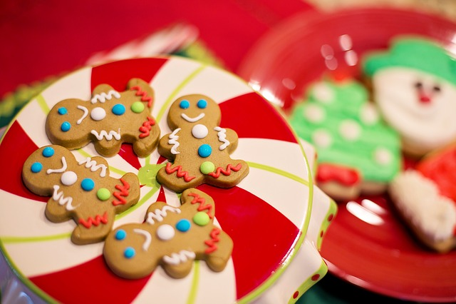
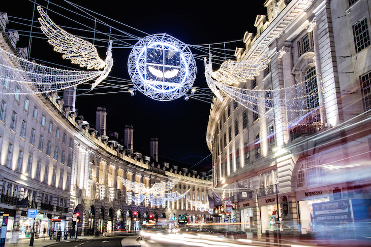

Fun Christmas Activities for Kids and Families
With the holidays just around the corner, you may be starting to plan your big family Christmas party. But while you're busy cooking up the perfect Christmas dinner, you'll want to keep your loved ones occupied—especially if you plan on inviting little ones. Luckily for you, there are plenty of fun Christmas games for kids that'll keep them busy for hours—and may just interest you too (in between glazing the ham and decorating your gingerbread cookies, of course!). Sure, your appetizer spread alone might be enough to keep all of your guests entertained, but you'll soon find that the following Christmas games can bring your family together too. Some activity tips:
Christmas Cookies
Do you have a cookie monster in your house? Most kids love to eat cookies, but you may be surprised by how much little ones like to make cookies, too! Peanut-butter blossoms! Spritz cookies! Gingerbread men! There are just too many tasty holiday cookies to choose from.
Sledging & Snow Fun

For the children, snow always equals fun and as well as the all-important winter activities there will be plenty of time for you to play in the snow as a family and enjoy this wonderfully memorable experience together.
Go for a Christmas light walk
This is best in a residential area where children can look out for all the Christmas lights and other decorations. Look the variety of lights, indoors and out.